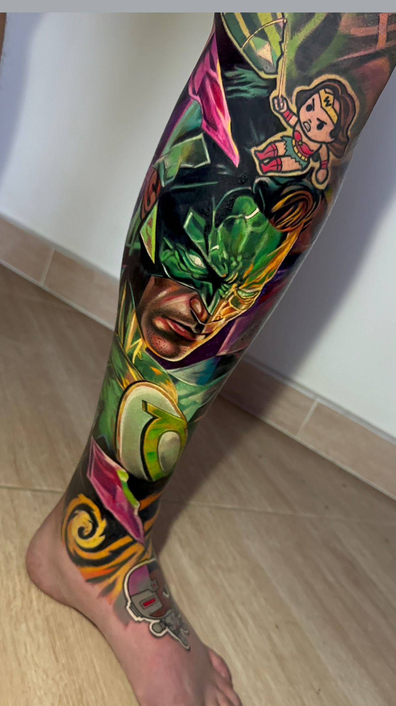
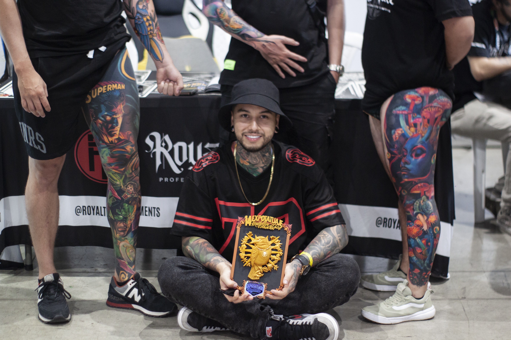
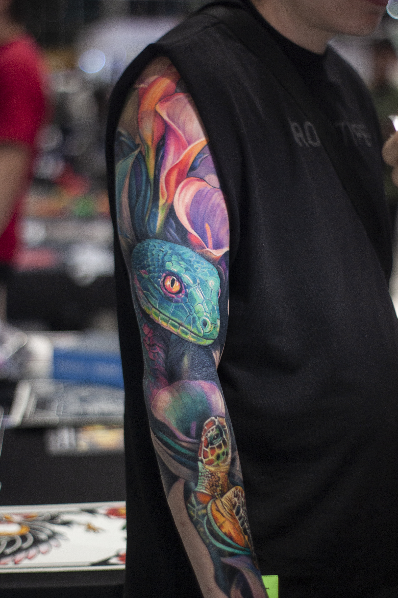

DAVID GIRALDO DG
Tatuador · Pereira
David Giraldo DG hace parte de Burdo Tattoo Collective desde Pereira, destacándose por su trayectoria y experiencia dentro de la industria del tatuaje.
Su recorrido lo ha llevado a participar en múltiples exposiciones de tatuajes, donde ha sido reconocido como ganador y también como jurado, aportando su experiencia y criterio artístico a importantes eventos de la escena del tatuaje.
VIDEOS DE DAVID GIRALDO DG
Conoce parte de su trabajo, experiencias y contenido relacionado con el mundo del tatuaje.
David Giraldo ♛
Su pasión por el color se refleja en cada tatuaje, creando piezas llenas de vida, intensidad y expresión artística.
COTIZACIÓN

